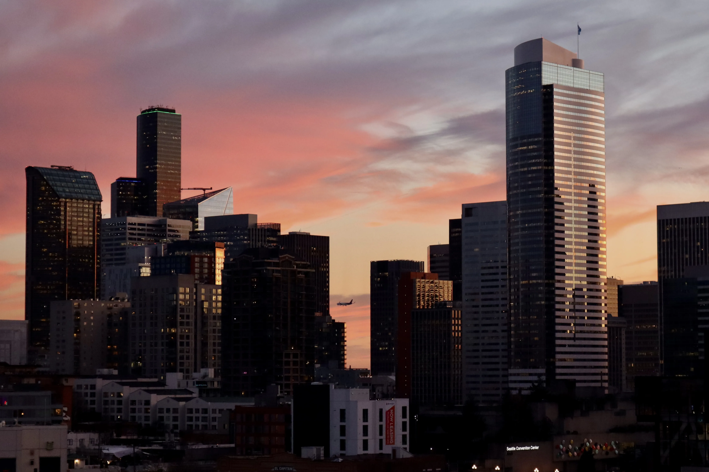
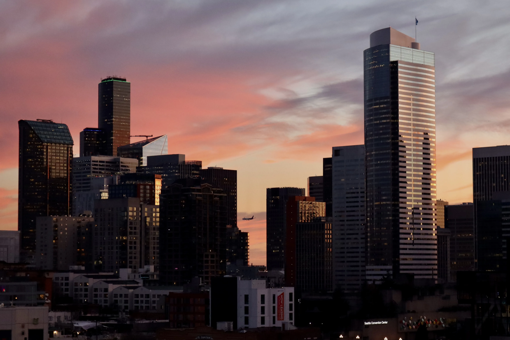

Seattle, Washington
Seattle will always be my home and I am forever grateful for the city that taught me so much about myself. For this view to be from the rooftop of my apartment is such a gift (and evidence of some pretty solid work thus far).
While I can feel my time in Seattle is setting, there is nothing but conviction and excitement ahead.
Ruslan and I like to say the two black buildings with the blue and green ring lights are the Koel towers. I believe that one day we will have a tower standing tall in the skyline to be admired.